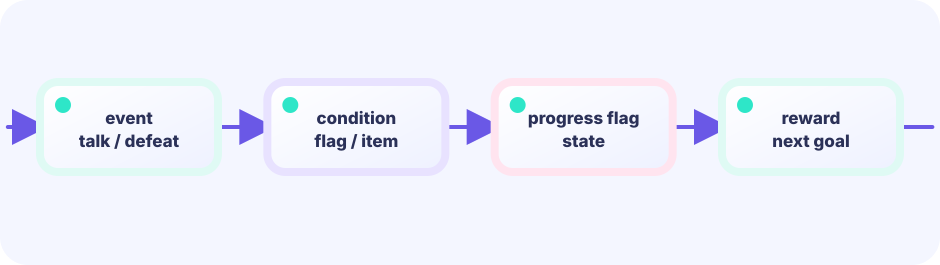

Find the NPC using facing
Add the facing vector to the player position to get the tile directly in front. Look up that tile in the NPC map to find who is standing there.
front := p.Add(facing)
★★☆☆☆ / PLAYABLE
Change dialogue based on who is speaking and what has already happened. Flags — simple true/false booleans — let the same elder say three different things depending on quest progress.
On screen you see original hero Ebi Tenjiroh; hits still use simple shapes. Movement math still lives in the same LEVEL 01 state boundary.
PLAYABLE / WEBASSEMBLY
Move: arrows / WASD / tap | Talk: Space / X / tap the top area
FIRST-TIME READER
Find where this one line is used, then follow how its value changes on screen. This is the shared game-state boundary: add rules in Update, then choose an independent presentation in Draw. The numbered steps below add one system at a time.
ONE RULE TO TRACE
Match the explanation to this line, then test the change in the game.
if choice==Help { g.helped=true }
DEEP DIVE / DIALOGUE & FLAGS
Flags are true/false switches that record what has happened. Set quest = true when the player accepts the quest, herb = true when the herb is picked up. Every time the player talks to the elder, the code checks the current flag combination and chooses the matching dialogue. Paging through text is just incrementing a line index.
Add the facing vector to the player position to get the tile directly in front. Look up that tile in the NPC map to find who is standing there.
front := p.Add(facing)
Store each line of dialogue in a string slice talk. A line index advances on each button press. When line reaches the end, clear the slice.
g.line++
Two booleans — quest and herb — create three distinct situations the elder can recognize. Adding more flags scales to arbitrarily complex event trees.
if !g.quest { ... }
TRY IT / LAB
The same NPC can speak different lines based on a flag.
A slow-motion model of the real game rule.
TRY IT · GO
flags["found"] = true if flags["found"] { text = after } else { text = before }
—
THE DIALOGUE RULE
front := point{g.p.x + g.facing.x, g.p.y + g.facing.y}
is there an NPC in front?
who, ok := g.npcs[front]
pick dialogue based on flags
if !g.quest { g.quest = true; g.talk = [...] }
Flags record facts about the world. Without them the elder would say the same thing on every talk, making quests impossible to progress.
IN THE REAL GAME
Pressing Space or tapping the top of the screen calls interact(). It finds the NPC directly in front and, for the elder, checks the two flags to decide which dialogue lines to load.
func (g *game) interact() {
front := point{g.p.x + g.facing.x, g.p.y + g.facing.y}
who, ok := g.npcs[front]
if !ok { return }
switch who {
case "elder":
if !g.quest {
g.quest = true
g.talk = []string{"Elder: A healing herb grows northwest.",
"Please bring it back to me!"}
} else if !g.herb {
g.talk = []string{"Elder: The herb is in the northwest corner."}
} else {
g.talk = []string{"Elder: You found it! Thank you, hero!",
"QUEST COMPLETE"}
g.clear = true
}
}
}WITHOUT FLAGS
Without flags every conversation resets. The elder can never tell whether you have accepted the quest or already returned with the herb.
WITH FLAGS
Two flags yield three distinct dialogue branches. Scale to five or ten flags and the same system supports a full story arc.
YOUR FIRST TUNING
Change the "child" case to check g.quest. The child could cheer you on after you accept the quest, or celebrate when you return with the herb.
FEEDBACK